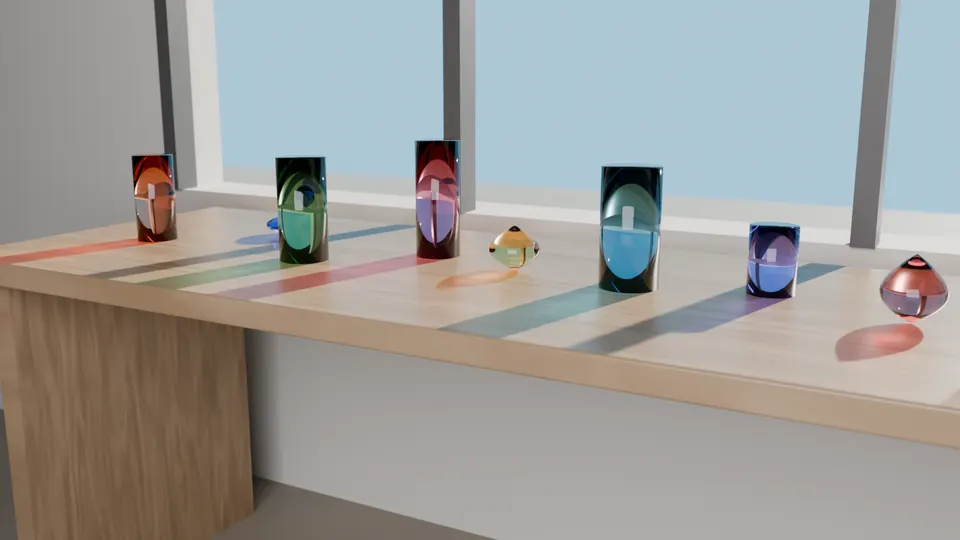

Artist
汐見 透しおみ とおる／Toru Shiomi
ガラスと光の彫刻家。1981年、石川県生まれ。2014年から瀬戸内海の島に工房を構える。

作家の言葉
ガラスは光を止めない。少しだけ色を付け、遅らせ、曲げて、床に置く。私の作品は、ガラスそのものより、その向こうにできる影のほうだと思っている。
だから展示のたびに、照明の位置と高さを一から決め直す。同じ作品でも、朝の窓辺と夜のスポットライトでは、床に落ちる色の形がまるで違う。作品の写真には、必ず影まで入れてもらう。
作品に番号を振り始めたのは2008年、最初の粒を吹いた年からだ。番号は作品の名前より長く残る。題名を忘れても、番号を言えば、その年の工房の暑さと、ガラスの重さを思い出せる。
経歴
- 1981
- 石川県に生まれる
- 2004
- 美術大学の彫刻科を卒業。金属の鋳造を学ぶ
- 2005
- ガラス工房の研修生になり、吹きガラスと鋳造ガラスを習う
- 2008
- 作品番号001「雨粒の重さ」。以後、すべての作品に番号を振る
- 2011
- 最初の輪の作品「最初の輪」を発表
- 2014
- 瀬戸内海の島に工房を移す。板ガラスの連作を始める
- 2018
- 水平に置く「水面」の連作を始める
- 2026
- 初めての回顧展「光の目録 2008–2026」（潮見市立美術館）
展覧会
| 年 | 展覧会 | 会場 | 種類 |
|---|---|---|---|
| 2026 | 「光の目録 2008–2026」開催中 | 潮見市立美術館（岡山） | 回顧展 |
| 2025 | 「透明な時間」 | 北浜現代美術館（大阪） | 個展 |
| 2022 | 「水面の下」 | 潮見市立美術館（岡山） | 個展 |
| 2019 | 「Amber」 | Galerie Lumen（パリ） | 個展 |
| 2016 | 「影の地図」 | 北浜現代美術館（大阪） | グループ展 |
| 2013 | 「輪をくぐる光」 | 白砂ガラス美術館（富山） | 個展 |
| 2010 | 「粒と柱」 | ギャラリー灯（東京） | 個展 |
所蔵
作品の所蔵先と、その作品番号です。
- 個人蔵002・006・009・014・018・022・025・027・028
- 作家蔵001・003・007・011・015・023・030
- 北浜現代美術館012・013・017・020・026・029
- 潮見市立美術館008・016・021・024
- 白砂ガラス美術館004・005・010
- Galerie Lumen019